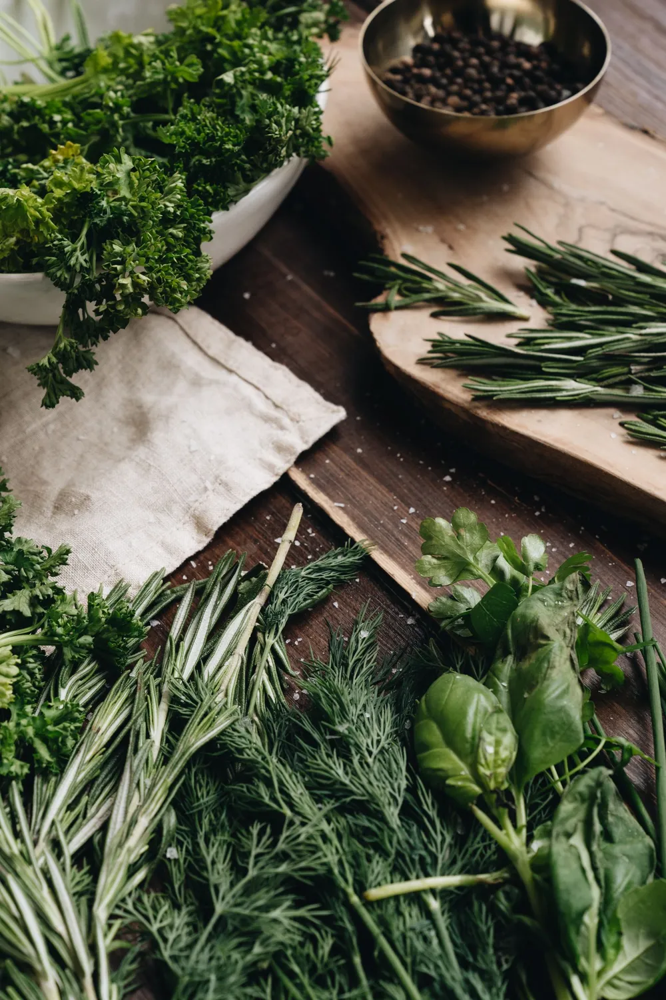
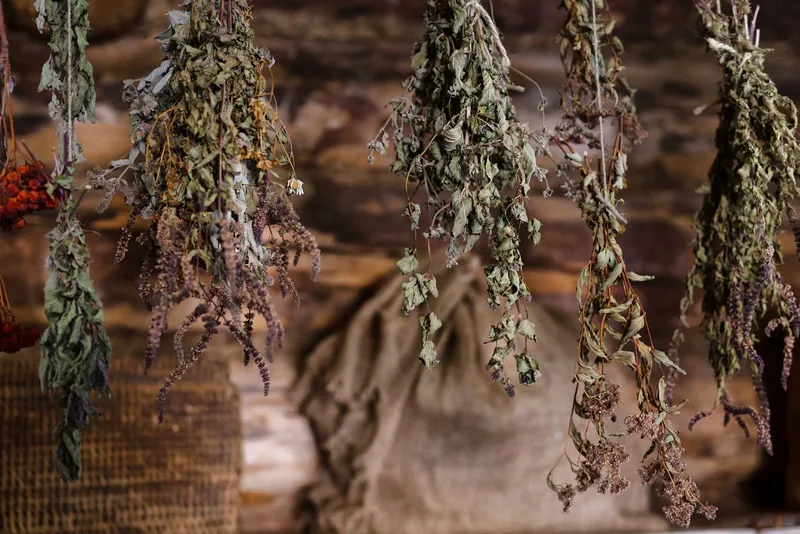
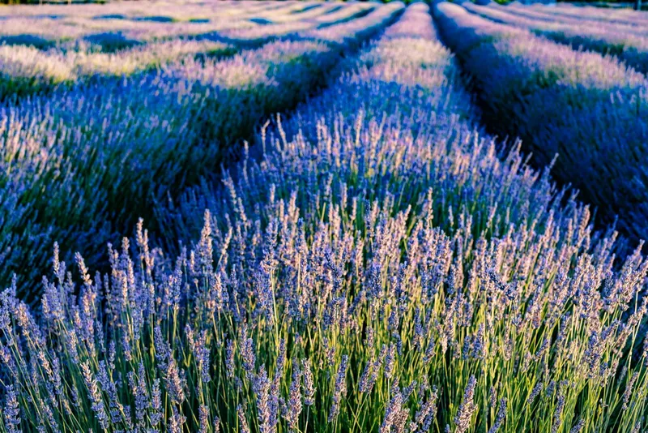
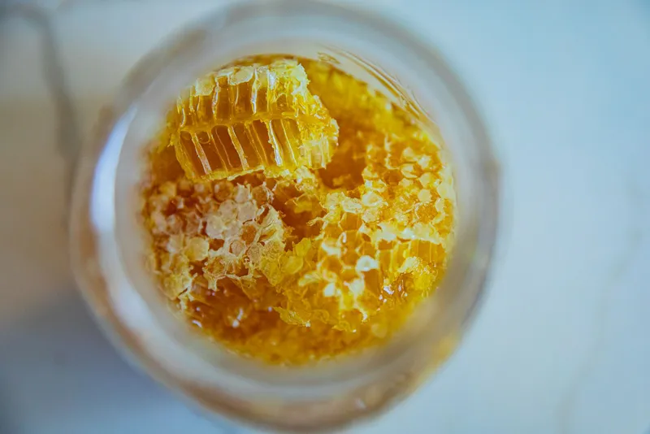
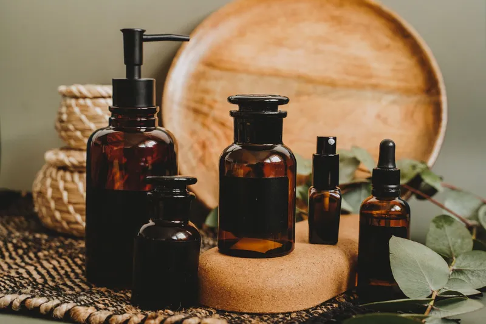

A herb farm on a south-facing slope.
Wildcombe began as a stall at the Friday market in Totnes, with a dozen herbs, a hand scale and a lot of paper bags. We are still small enough that the person who picks your chamomile is probably the person who packs it.
The farm is fourteen beds on a combe above the Dart, where the ground faces south and the wind comes over the moor. We grow everything we can: the teas, the herbs that go into the salves, the elderberries and the thyme for the honey. When we cannot grow something ourselves, such as valerian, we buy it from a grower we have met, and the label says where it came from.
We dry our herbs on racks in the barn within hours of picking, and we pack to order, so what arrives at your door has been on the shelf for weeks, not months.

- First sold at Totnes market
- 2011
- Small beds on the combe
- 14
- Packing days a week, Tuesday and Friday
- 2
- Herbs sold that we have not tasted
- 0
How things are made.
Teas
Picked by hand on dry mornings, dried in a single layer on mesh racks with the barn doors open, and kept whole. We crush nothing, which is why the flavour lasts.
Salves and balms
Petals and roots are steeped in oil on the warm shelf above the kitchen range for six weeks, strained, and set with beeswax from the next farm.
Syrups and tinctures
Small batches, simmered or steeped in the farm kitchen. Elderberries are picked from our hedges in September and cooked the same day.




Plate and picture credits.
The botanical plates are public-domain scans from Wikimedia Commons, made from Franz Eugen Köhler's Medizinal-Pflanzen (1887) and other 18th and 19th century herbals. The photographs are free to use under the Pexels licence. Thank you to everyone who made them.
Plates
- Matricaria recutita - Köhler–s Medizinal-Pflanzen-091, Franz Eugen Köhler, in Köhler's Medizinal-Pflanzen
- Köhler's Medizinal-Pflanzen in naturgetreuen Abbildungen mit kurz erläuterndem Texte (Plate 65) BHL303696, Brandt, Wilhelm; Gürke, M.; Köhler, F. E.; Pabst, G.; Schellenberg, G.; Vogtherr, Max.
- Köhler's Medizinal-Pflanzen in naturgetreuen Abbildungen mit kurz erläuterndem Texte (Plate 67) BHL303700, Brandt, Wilhelm; Gürke, M.; Köhler, F. E.; Pabst, G.; Schellenberg, G.; Vogtherr, Max.
- Köhler's Medizinal-Pflanzen in naturgetreuen Abbildungen mit kurz erläuterndem Texte (Plate 46) BHL303654, Brandt, Wilhelm; Gürke, M.; Köhler, F. E.; Pabst, G.; Schellenberg, G.; Vogtherr, Max.
- Köhler's Medizinal-Pflanzen in naturgetreuen Abbildungen mit kurz erläuterndem Texte (Plate 60) BHL303684, Brandt, Wilhelm; Gürke, M.; Köhler, F. E.; Pabst, G.; Schellenberg, G.; Vogtherr, Max.
- Symphytum officinale - Köhler–s Medizinal-Pflanzen-268, Walther Otto Müller
- Köhler's Medizinal-Pflanzen in naturgetreuen Abbildungen mit kurz erläuterndem Texte (Plate 58) BHL303678, Brandt, Wilhelm; Gürke, M.; Köhler, F. E.; Pabst, G.; Schellenberg, G.; Vogtherr, Max.
- Calendula officinalis - 001x, Oceancetaceen - Alice Chodura
- Echinacea purpurea - 001x, Oceancetaceen - Alice Chodura
- Köhler's Medizinal-Pflanzen in naturgetreuen Abbildungen mit kurz erläuterndem Texte (Plate 15) BHL303592, Brandt, Wilhelm; Gürke, M.; Köhler, F. E.; Pabst, G.; Schellenberg, G.; Vogtherr, Max.
- Valeriana officinalis - Köhler–s Medizinal-Pflanzen-143 clean, Franz Eugen Köhler, Köhler's Medizinal-Pflanzen
- Dutch: Grote Brandnetel Plate 0030, Flora Batava (KB), volume 1,
- Illustration Urtica dioica0 clean, User:Kilom691
Photographs
- Drying herbs, Pexels
- Herbs on a board, Pexels
- Lavender rows, Pexels
- Honeycomb, Pexels
- Amber bottles, Pexels
- Chamomile stems, Pexels
- Stone cottages, Pexels
- Chamomile tea, Pexels
- Tea with infuser, Pexels


_BHL303696.jpg){kind=link}
_BHL303700.jpg){kind=link}
_BHL303654.jpg){kind=link}
_BHL303684.jpg){kind=link}

_BHL303678.jpg){kind=link}


_BHL303592.jpg){kind=link}